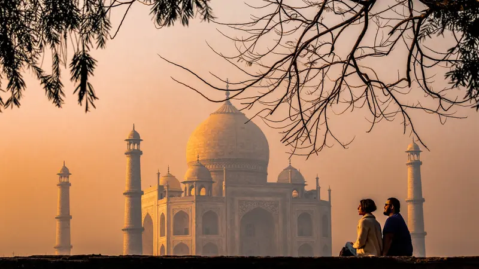
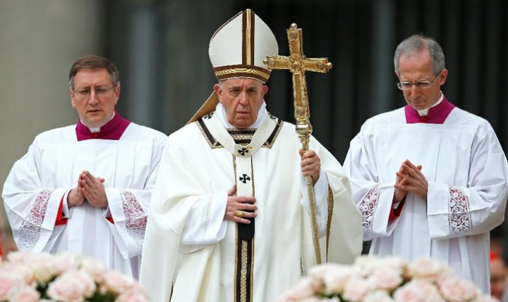
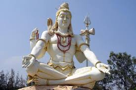
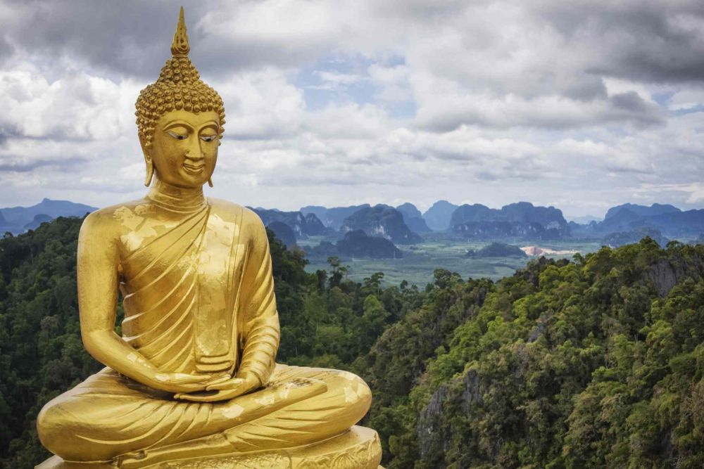
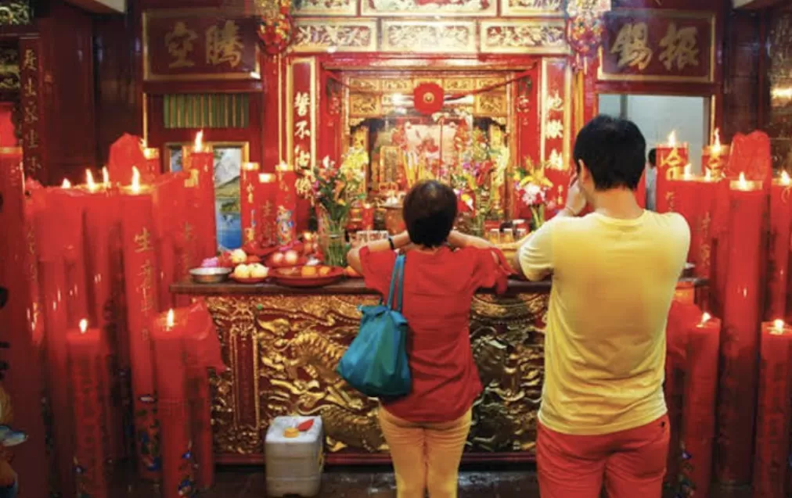

Indonesia dikenal sebagai negara dengan beragam suku, budaya, dan agama. Pemerintah Indonesia secara resmi mengakui enam agama utama yang dianut oleh masyarakat. Keenam agama tersebut adalah Islam, Kristen Protestan, Katolik, Hindu, Buddha, dan Khonghucu. Masing-masing agama ini memiliki ajaran, praktik, dan sejarah yang berbeda, tetapi semuanya berkontribusi pada keragaman dan harmoni bangsa.
Islam
Islam adalah agama terbesar di Indonesia. Ajarannya didasarkan pada kitab suci Al-Quran dan Hadis, serta mencakup keyakinan pada satu Tuhan, yaitu Allah. Umat Islam menjalankan ibadah seperti salat, puasa di bulan Ramadhan, zakat, dan haji
- Tempat Ibadah: Masjid
- Hari Besar: Idul Fitri dan Idul Adha
- Kitab Suci: Al-Quran
Kristen Protestan
Kristen Protestan adalah salah satu cabang dari agama Kristen yang berfokus pada ajaran Alkitab. Penganut Protestan tidak mengakui otoritas Paus seperti dalam Katolik, tetapi menekankan hubungan pribadi dengan Tuhan melalui Yesus Kristus dan Alkitab.
- Tempat Ibadah: Gereja
- Hari Besar: Natal dan Pasca
- Kitab Suci: Al Kitap Kristen
Katolik
Katolik merupakan cabang lain dari agama Kristen yang mengakui otoritas Paus sebagai pemimpin tertinggi gereja. Umat Katolik juga mengikuti sakramen-sakramen seperti baptisan, perjamuan kudus, dan pengakuan dosa, yang merupakan bagian penting dari ibadah mereka.
- Tempat Ibadah: Gereja
- Hari Besar: Natal dan Pasca
- Kitab Suci: Al Kitap Katolik
Hindu
Hindu adalah agama yang ajarannya berpusat pada konsep dharma (kewajiban), karma (tindakan), dan samsara (reinkarnasi). Di Indonesia, agama Hindu paling banyak dianut di Bali. Ajaran Hindu juga mencakup penghormatan kepada dewa-dewa dan ritus-ritus keagamaan yang kaya akan tradisi.
- Tempat Ibadah: Pura
- Hari Besar: Hari Raya Galungan
- Kitab Suci: Weda
Buddha
Agama Buddha didirikan oleh Siddhartha Gautama, yang kemudian dikenal sebagai Sang Buddha. Agama ini menekankan pada pencapaian pencerahan melalui meditasi, etika, dan kebijaksanaan. Konsep utama dalam Buddha adalah Empat Kebenaran Mulia dan Jalan Mulia Berunsur Delapan.
- Tempat Ibadah: Vihara
- Hari Besar: Waisak
- Kitab Suci: Tripitaka
Khonghucu
Khonghucu atau Konfusianisme adalah agama yang berasal dari ajaran filsuf Tiongkok, Kong Zi (Konfusius). Ajarannya berfokus pada etika, moral, dan hubungan antarmanusia, serta menghormati leluhur dan tradisi. Khonghucu juga mengajarkan pentingnya kebajikan, tata krama, dan harmoni dalam kehidupan.
- Tempat Ibadah: Vihara
- Hari Besar: Waisak
- Kitab Suci: Tripitaka